As mentioned before, interpolation schemes are often used to increase the accuracy of table lookup. Here we will give a somewhat simplified account of the effects of table sizes and interpolation schemes on the result of table lookup.
To speak of error in table lookup, we must view the wavetable as a sampled
version of an underlying function. When we ask for a value of the
underlying function which lies between the points of the wavetable, the error
is the difference between the result of the wavetable lookup and the ``ideal"
value of the function at that point. The most revealing study of wavetable
lookup error assumes that the underlying function is a sinusoid (Page
 ). We can then understand what happens to other wavetables by
considering them as superpositions (sums) of sinusoids.
). We can then understand what happens to other wavetables by
considering them as superpositions (sums) of sinusoids.
The accuracy of lookup from a wavetable containing a sinusoid depends on two factors: the quality of the interpolation scheme, and the period of the sinusoid. In general, the longer the period of the sinusoid, the more accurate the result.
In the case of a synthetic wavetable, we might know its sinusoidal components from having specified them--in which case the issue becomes one of choosing a wavetable size appropriately, when calculating the wavetable, to match the interpolation algorithm and meet the desired standard of accuracy. In the case of recorded sounds, the accuracy analysis might lead us to adjust the sample rate of the recording, either at the outset or else by resampling later.
Interpolation error for a sinusoidal wavetable can have two components: first, the continuous signal (the theoretical result of reading the wavetable continuously in time, as if the output sample rate were infinite) might not be a pure sinusoid; and second, the amplitude might be wrong. (It is possible to get phase errors as well, but only through carelessness.)
In this treatment we'll only consider polynomial interpolation schemes such as
rounding, linear interpolation, and cubic interpolation. These schemes amount
to evaluating polynomials (of degree zero, one, and three, respectively) in the
interstices between points of the wavetable. The idea is that, for any index
 , we choose a nearby reference point 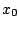, and let the output be calculated
by some polynomial:
, we choose a nearby reference point 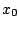, and let the output be calculated
by some polynomial:
Figure 2.11 shows the effect of using linear (two-point) interpolation to fill in a sinusoid of period 6. At the top are three traces: the original sinusoid, the linearly-interpolated result of using 6 points per period to represent the sinusoid, and finally, another sinusoid, of slightly smaller amplitude, which better matches the six-segment waveform. The error introduced by replacing the original sinusoid by the linearly interpolated version has two components: first, a (barely perceptible) change in amplitude, and second, a (very perceptible) distortion of the wave shape.
| 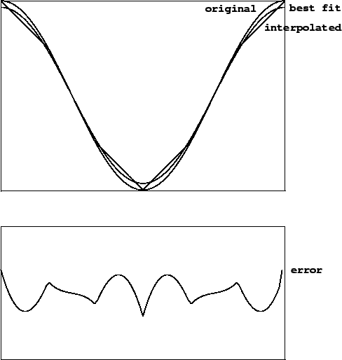 |
The bottom graph in the figure shows the difference between the interpolated waveform and the best-fitting sinusoid. This is a residual signal all of whose energy lies in overtones of the original sinusoid. As the number of points increases, the error decreases in magnitude. Since the error is the difference between a sinusoid and a sequence of approximating line segments, the magnitude of the error is roughly proportional to the square of the phase difference between each pair of points, or in other words, inversely proportional to the square of the number of points in the wavetable. Put another way, wavetable error decreases by 12 dB each time the table doubles in size. (This rule of thumb is only good for tables with 4 or more points.)
Four-point (cubic) interpolation works similarly. The interpolation formula
is:
The allowable input domain for table lookup depends on the number of points of
interpolation. In general, when using  -point interpolation into a table
with
-point interpolation into a table
with  points, the input may range over an interval of 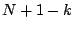 points.
If
points, the input may range over an interval of 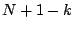 points.
If  (i.e., no interpolation at all), the domain is from
(i.e., no interpolation at all), the domain is from  to
to  (including the endpoint at
(including the endpoint at  but excluding the one at
but excluding the one at  ) assuming input
values are truncated (as is done for non-interpolated table lookup in Pd). The
domain is from -
) assuming input
values are truncated (as is done for non-interpolated table lookup in Pd). The
domain is from - to 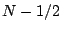 if, instead, we round the input to the nearest
integer instead of interpolating. In either case, the domain stretches over a
length of
to 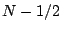 if, instead, we round the input to the nearest
integer instead of interpolating. In either case, the domain stretches over a
length of  points.
points.
For two-point interpolation, the input must lie between the first and last
points, that is, between  and
and  . So the
. So the  points suffice to define
the function over a domain of length
points suffice to define
the function over a domain of length  . For four-point interpolation,
we cannot get values for inputs between 0 and 1 (not having the required
two points to the left of the input) and neither can we for the space between
the last two points (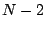 and
. For four-point interpolation,
we cannot get values for inputs between 0 and 1 (not having the required
two points to the left of the input) and neither can we for the space between
the last two points (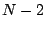 and  ). So in this case the domain reaches from
). So in this case the domain reaches from
 to and has length 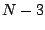.
to and has length 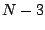.
Periodic waveforms stored in wavetables require special treatment at the
ends of the table. For example, suppose we wish to store a pure sinusoid of
length  . For non-interpolating table lookup, it suffices to set, for
example,
. For non-interpolating table lookup, it suffices to set, for
example,
For four-point interpolation, the cycle must be adjusted to start at the point
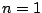, since we can't get properly interpolated values out for inputs less than
one. If, then, one cycle of the wavetable is arranged from  to
to  , we
must supply extra points for
, we
must supply extra points for  (copied from
(copied from  ), and also and 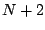,
copied from
), and also and 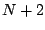,
copied from  and 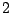, to make a table of length 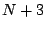. For the same sinusoid
as above, the table should contain:
and 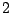, to make a table of length 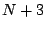. For the same sinusoid
as above, the table should contain: